A Limbus Company egy látványos, sötét hangulatú turn-based taktikai játék, amelyet a dél-koreai Project Moon fejlesztett. A játék a stúdió korábbi címeinek (Lobotomy Corporation, Library of Ruina) világában játszódik, egy brutális, abszurd és groteszk nagyvárosban, amit csak „The City” néven ismerünk.
A játékban egy különös csapat, a Sinners vezetőjeként veszünk részt mélyre hatoló, veszélyes küldetéseken, hogy visszaszerezzük a múlt technológiai maradványait. A történet központi eleme a bűn, a személyes tragédiák és a vezeklés, miközben fokozatosan ismerjük meg a karakterek fájdalmas múltját és motivációit. A sztori nagy hangsúlyt kap: sok dialógus, belső monológ és stílusos vizuális novellaszerű bemutatás segíti a világ megértését.
A harcrendszer körökre osztott (turn-based), de valós idejű elemeket is tartalmaz: a karakterek „sorsvonalai” összekapcsolódnak, és egyfajta láncreakció-szerű ütközetek zajlanak. Minden döntés kritikus, az időzítés, a karakterek közti szinergia és az ellenfelek mechanikáinak kiismerése kulcs a túléléshez.
A Limbus Company azoknak szól, akik szeretik a komplex, filozofikus történeteket, az egyedi művészeti stílust, és a mély mechanikákra építő harcrendszert.
| Sinners | ||
| Név | Kép | Ikon |
| Yi Sang | 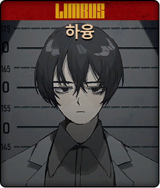 | 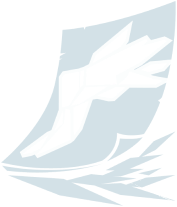 |
| Faust | 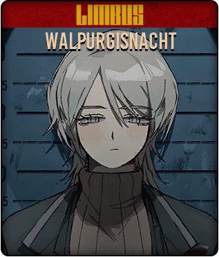 | 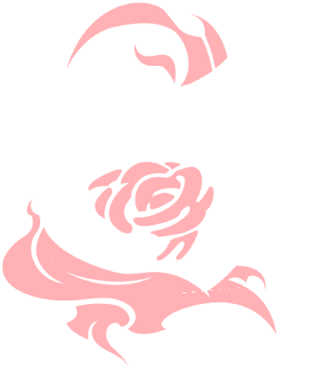 |
| Don Quixote | 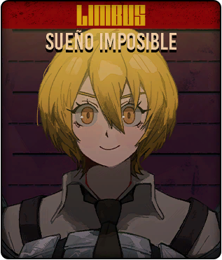 | 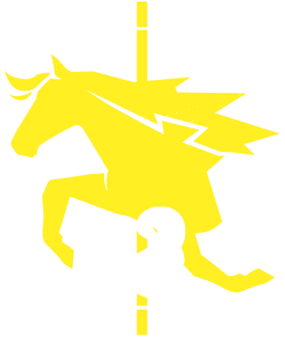 |
| Ryoshu | 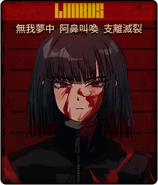 | 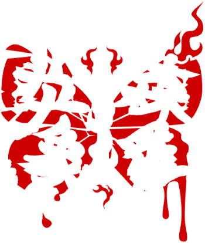 |
| Mersault | 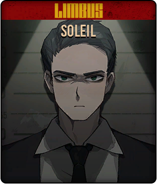 | 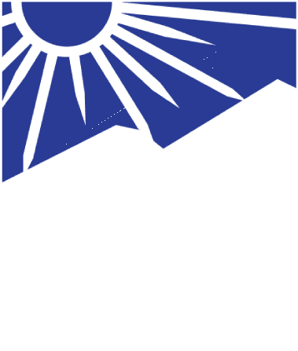 |
| Hong Lu | 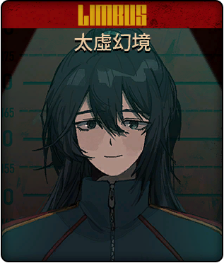 | |
| Heathcliff | 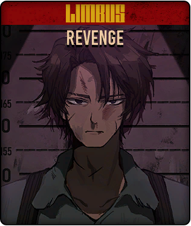 | 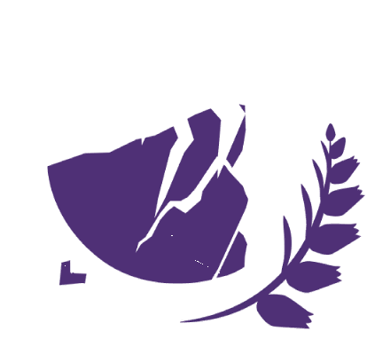 |
| Ishmael | 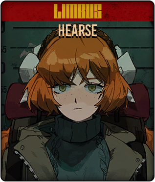 | 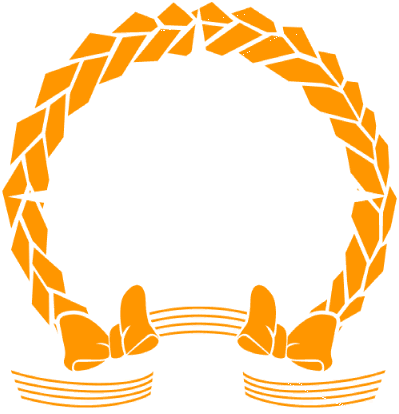 |
| Rodion | 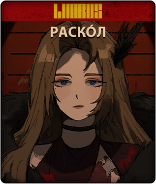 | 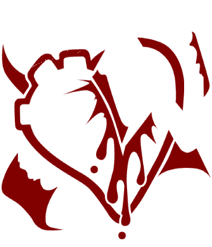 |
| Sinclair | 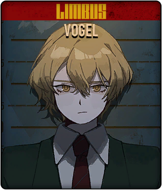 | |
| Outis | 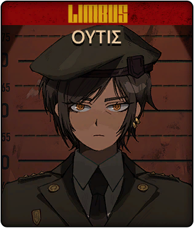 |  |
| Gregor | 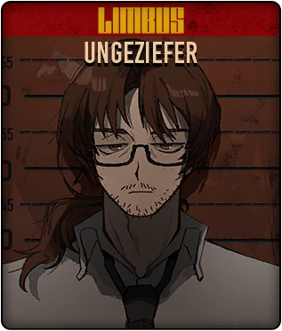 | |